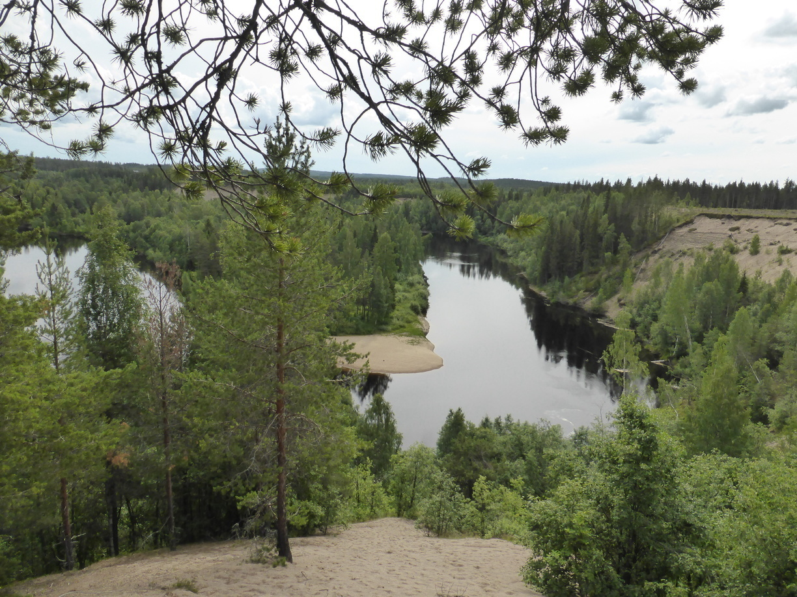

Hashtag Velolife Posted on July 6, 2016
Tag 37
Norsjö - Storkågeträsk 97 km
Am nächsten Morgen schien wieder die Sonne. Im super Wäscheraum am Campingplatz waren auch alle meine Sachen über Nacht getrocknet.
Am Ende kam ich zufällig an einer Karte der Ortschaft Storkågeträsk vorbei. Dort war ein Badeplatz eingezeichnet. Nach etwas Rumfragen kam ich schließlich an dem Badeplatz an. Dieser war recht klein aber für mein Zelt war mehr als genug Platz.
Tag 38
Storkågeträsk - Hemmingsmark 56 km

Ich hatte mir bereits am Tag zuvor vorgenommen mal etwas kürzer zu treten. Um kurz nach drei ich dann einen netten Badeplatz und beschloß, dort zu bleiben. Außer mir stand noch ein Wohnmobil auf der Wiese, aber die Bewohner schienen zu schlafen. Ich ging kurz baden und legte mich anschließend im Zelt ein bisschen hin. Als es langsam Zeit zum Abendessen war tat sich auch etwas bei meinen Nachbarn. Jonas und Tim waren schon zwei Monate in Skandinavien unterwegs und hielten sich nicht mehr an einen normalen Schlafrythmus. Da es nie wirklich dunkel ist, kann man sein Leben ja genau so gut in der Nacht leben. Wir nahmen dann gemeinsam unser Abendessen bzw. Frühstück zu uns. Anschließend wurde ein Lagerfeuer entfacht. Von Jonas hab ich dann noch eine kleine Einführung in Sachen Angeln bekommen. Leider hab ichs nicht so mit Geduld und hab die Sache dann auch recht schnell aufgegeben. Aber ich durfte ein Stück von dem Hecht probieren, denn Tim zuvor gefangen hatte.
Das Highlight war aber, dass ich von Jonas und Tim eine Wäscheleine spendiert bekam. Endlich kann ich meine Wäsche vernünftig zum Trocknen aufhängen. Leider fing es um kurz vor 12 heftig an zu Regnen und das nette Beisammensein am Lagerfeuer wurde vorschnell abgebrochen.
Tag 39
Hemmingsmark - Sikfors 73 km
Am nächsten Morgen waren die Zwei bereits weiter gefahren. Es war immer noch am Regnen und wie sich heraus stellte nützt bei Regen auch die beste Wäscheleine nichts. Es dauerte eine Weile bis ich mich zum Packen durch gerungen hatte. Auf dem Weg nach Piteå war es immer noch am Regnen. Am meisten hatte ich jedoch mit dem Wind zu kämpfen. In Piteå konnte ich mich im Supermarkt und in Intersport aufwärmen. Bei Letzterem habe ich eine neue Jacke erstanden, die ich auch gleich einsetzten konnte. Am Ende kam ich über ein paar Umwege zum Campingplatz in Sikfors. Nach einem solchen Tag war eine Dusche sehr willkommen. Die Wäscheleine konnte ich leider auch hier nur kurz testen.
Tag 40
Sikfors - Älvsbyn 24 km
Wenn ich es in 80 Tagen um die Welt schaffen will, dann muss ich mich bei der zweiten Hälfte etwas mehr ins Zeug legen.
Leider fing auch dieser Tag mit Regen an. An Regentagen brauche ich immer was länger um mich im Zelt aufzuraffen und um anschließend alles halbwegs trocken zu verstauen. Als ich dann nach 10 Kilometern in einem Bushaltestellenhäuschen Zuflucht suchte war ich bereits komplett durchnässt. Die neue Regenjacke hat sich zwar bewährt doch die Handschuhe konnten dem Regen nicht Stand halten und an den Socken lief das Wasser in die Schuhe. Ich tauschte die Socken gegen ein trockenes Paar, zog mit viel Mühe die nassen Handschuhe wieder an (Leider hatte ich kein trockenes Paar dabei) und fuhr weiter.
Bei dem Wetter wollte ich gerne wieder auf einen Campingplatz oder besser noch eine Jugendherberge um im Trockenen zu sein und meine Sachen dort zu trocknen. In Älvsbyn angekommen stand ich dann vor der Wahl. Entweder die 40 Kilometer bis Boden radeln wo es eine Jugendherberge und einen Campingplatz gab oder auf dem Campingplatz in Älvsbyn nächtigen. Da ich keine 40 Kilometer weiter durch den Regen fahren wollte, entschied ich mich für Letzteres. Die Dame an der Reception bot mir netterweise an, für den selben Preis in einer Hütte zu schlafen. Natürlich nahm ich das Angebot an.
Als Erstes habe ich die Wäscheleine Quer durch den Flur gespannt und die Heizung aufgedreht. Anschließend habe ich erstmal eine Maschine Wäsche angemacht. Während die Maschine lief ging ich ein bisschen am Pite Älven spazieren. Der Regen hatte (wie sollte es auch anders sein) inzwischen nachgelassen.